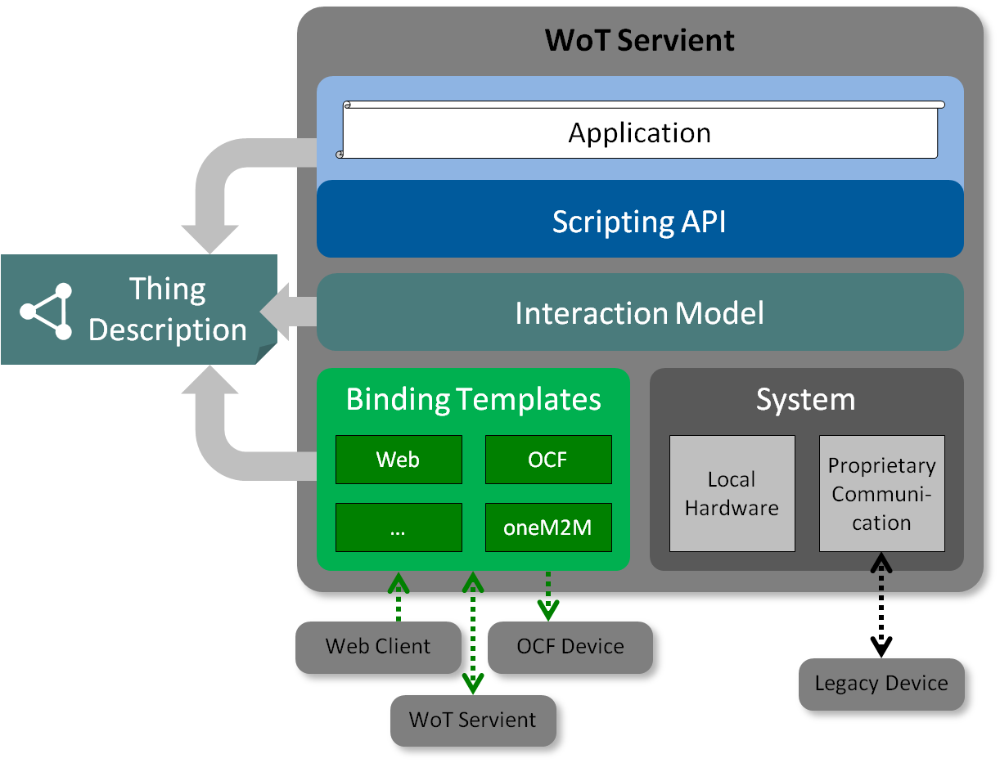

The W3C Web of Things (WoT) is intended to enable interoperability across IoT Platforms and application domains. Primarily, it provides mechanisms to formally describe IoT interfaces to allow
IoT devices and services to communicate with each other, independent of their underlying implementation, and across multiple networking protocols. Secondarily, it provides a standardized way to define and program IoT behavior.
This document describes the abstract architecture for the W3C Web of Things. It is derived from a set of use cases and can be mapped onto a variety of concrete deployment scenarios, several examples
of which are given. This document is focused on the standardization scope of W3C WoT, which consists of three initial building blocks that are briefly introduced and their interplay explained.
The WoT Thing Description (TD) provides a formal mechanism to describe the network interface provided by IoT devices and services, independent of their implementation. Provision of a TD is the primary requirement for a device to participate in the Web
of Things. In fact, defining a Thing Description for an existing device allows that device to participate in the Web of Things without having to make any modifications to the device itself. WoT Binding Templates define how a WoT device communicates
using a concrete protocol. The WoT Scripting API—whose use is not mandatory—provides a convenient mechanism to discover, consume, and expose Things based on the WoT Thing Description.
Other non-normative architectural blocks and conditions underlying the Web of Things are also described in the context of deployment scenarios. In particular, recommendations for security and privacy are included, while the goal is to preserve and support
existing device mechanisms and properties. In general, W3C WoT is designed to describe what exists rather than to prescribe what to implement.
Status of This Document
This section describes the status of this document at the time of its publication. Other documents may supersede this document. A list of current W3C publications and the latest revision of this technical report can be found in the W3C technical reports index at https://www.w3.org/TR/.
Editor's note: The W3C WoT WG is asking for feedback
Please contribute to this draft using the GitHub Issue feature of the WoT Architecture repository. For feedback on security
and privacy considerations, please use the WoT Security and Privacy Issues, as they are cross-cutting over all our documents.
This document was published by the Web of Things Working Group as a First Public Working Draft.
This document is intended to become a W3C Recommendation.
Publication as a First Public Working Draft does not imply endorsement by the W3C Membership. This is a draft document and may be updated, replaced or obsoleted by other documents at any time. It is inappropriate
to cite this document as other than work in progress.
The "Web of Things" (WoT) started as an academic initiative in the form of publications and, starting in 2010, a yearly International Workshop on the Web of Things. Its goal is to improve interoperability
as well as usability in the Internet of Things (IoT). With the increasing role of IoT services using other web standards in commercial and industrial applications, the W3C chartered an Interest Group in 2015 to identify technological building blocks for Recommendation Track standardization. With the WoT Working Group chartered end of 2016, the first set of WoT building blocks is now being standardized:
This document serves as an umbrella for the W3C WoT draft specifications and defines the basics such as terminology and the underlying abstract architecture of the W3C Web of Things. In particular, the purpose of this document is to provide
a set of use cases that lead to the W3C WoT Architecture,
a set of requirements for WoT implementations,
an overview of the WoT building blocks being standardized and their interplay,
a guideline to map the abstract architecture to software stacks and hardware components,
and security considerations to be aware of when implementing WoT building blocks.
2. Terminology
This document uses the following terms as defined here. The WoT prefix is used to avoid ambiguity for terms that are defined specifically for Web of Things concepts.
Editor's note
Please refer to this markdown file. Once the terminology definitions are stable, they will be included here.
3. Use Cases
This section is non-normative.
This section presents the use cases targeted by the W3C WoT and which are used to derive the abstract architecture discussed in 5.WoT Building Blocks.
While Smart Home use cases might appear predominant in this section, they should be seen as simply a vehicle to identify fundamental requirements inherent to most application domains. The Smart Home domain is suitable for identifying such
general requirements, as most stakeholders can relate to it.
3.1 Smart Home
The Smart Home is one of the application domains targeted by W3C WoT. As stated above its use cases are eligible to convey the fundamental requirements on discovery, connectivity, and provided
functionality. Also security has become a central issue in consumer systems. Furthermore, Smart Home use cases have stronger privacy requirements than commercial and industrial ones. In general, however, the fundamental aspects of the
Smart Home use cases given also apply to other use cases.
3.1.1 Device Controllers
The first use case is a local device controlled by user-operated remote controller as depicted in Figure 1Device Control. For
example, an electronic appliance such as an air conditioner with Web server functionality might be connected directly to a local home network. A remote controller can access the air conditioner through the local home network directly.
In this case, the remote controller can be realized by a browser or native application.
Figure 1Device Control
3.1.2 Thing-to-Thing
Figure 2Control Agent shows an example of direct Thing-to-Thing interaction. The scenario is as follows: when a sensor detects
the room temperature is surpassing a set threshold (e.g., 25°C), a control agent issues a "power-on" command to an air conditioner.
Figure 2Control Agent
3.1.3 Multiple Network Interfaces
The third use case is a mobile remote controller (e.g., on a smartphone) as shown in Figure 3Multiple Network Interfaces. When
at home, the smartphone can use Wi-Fi or Bluetooth/BLE to control an electronic appliance locally, while outside, it can use the cellular network.
Figure 3Multiple Network Interfaces
3.1.4 Gateways
Figure 4Smart Home Gateway shows a use case based on a Smart Home gateway. It is placed between a home network and the Internet.
The gateway manages electronic appliances inside the house and can receive commands from a remote controller over the Internet, e.g., from a smartphone as in the previous use case.
Figure 4Smart Home Gateway
3.1.5 Cloud Proxies
Cloud proxies can be realized in different ways:
Editor's note
The complexity of the use cases here increases too quickly. They will be split up to progressively add and explain each new feature.
3.1.5.1 Cloud-ready Devices
Figure 5Proxies with Cloud-ready Devices shows an example where electronic appliances are connected directly to the cloud.
The cloud mirrors the appliances and, acting as a proxy, can receive commands from remote controllers (e.g., a smartphone). Authorized controllers can be located anywhere, as the proxy is globally reachable.
Figure 5Proxies with Cloud-ready Devices
3.1.5.2 Legacy Devices
Figure 6Proxies with Legacy Devices shows an example where legacy electronic appliances cannot directly connect to the
cloud. Here, a gateway is needed to relay the connection. The gateway works as:
integrator of a variety of legacy communication protocols both in the physical and logical view
firewall toward the Internet
privacy filter which substitutes real image and/or speech, and logs data locally
local agent in case the Internet connection is interrupted
emergency services running locally when fire alarms and similar events occur
The cloud mirrors the gateway with all connected appliances and acts as an agent that manages them in the cloud in conjunction with the gateway. Furthermore, the cloud can receive commands from remote controllers (e.g., a smartphone), which can be located
anywhere.
Figure 6Proxies with Legacy Devices
3.2 Smart Factory
Figure 7Smart Factory shows an example of a Smart Factory. In this case, cell controllers automate factory equipment with specialized
communication such as RS-485 or EtherCAT. Line controllers orchestrate multiple cell controllers over IP-based networks. A factory controller integrates different line controllers. A cloud service collects data from the factory controller
and analyzes them for predictive maintenance. Users can monitor the factory through a dashboard. Note that factories usually do not reveal the internal topology of their lines and cells.
Figure 7Smart Factory
3.3 Connected Car
Figure 8Connected Car shows an example of a Connected Car. In this case, a gateway connects to car components through CAN and to the
car navigation system through a proprietary interface. Services running in the cloud collect data pushed from car components and analyze the data from multiple cars to determine traffic patterns. The gateway can also consume cloud services,
in this case, to get traffic data and show it to the driver through the car navigation system.
Figure 8Connected Car
4. Functional Requirements
This section is non-normative.
This section defines the properties required in an abstract Web of Things (WoT) architecture.
4.1 Flexibility
There are a wide variety of physical device configurations for WoT implementations. The WoT abstract architecture should be able to be mapped to and cover all of the variations.
4.2 Compatibility
We already have many existing IoT solutions and ongoing IoT standardization activities in many business fields. The WoT should provide a bridge between these existing and developing IoT solutions and Web technology based on WoT concepts. The WoT should
be upwards compatible with existing IoT solutions and current standards.
4.3 Security and Privacy
Editor's note
This section will likely undergo significant revision and reorganization. Please see the
WoT Security and Privacy repository for work in progress. In particular, the WoT Threat Model defines
the main WoT security stakeholders, assets, attack surfaces, and threats.
The functional WoT architecture should enable the use of best practices in security and privacy.
Generally, the WoT security architecture must support the goals and mechanisms of the IoT protocols and systems it connects to. These systems vary in their security requirements and risk tolerance, so security mechanisms will also vary based on these
factors. However, the WoT architecture needs to do no harm: it should support security and privacy at least as well as the systems it connects to.
Security means the system should preserve its integrity and functionality even when subject to attack. Privacy means that the system should maintain the confidentiality of personally identifiable information. In general, security and privacy cannot be
guaranteed but the WoT architecture should support best practices.
Security and privacy are especially important in the IoT domain since IoT devices need to operate autonomously and in many cases have access to both personal data and/or can be in control of safety-critical systems. Compared to personal systems, IoT devices
are subject to different and in some cases higher risks than IT systems. It is also important to protect IoT systems so that they can not be used to launch attacks on other computer systems.
5. WoT Building Blocks
This section presents the initial WoT building blocks that build up the abstract architecture for the Web of Things. This architecture is derived from the use cases in Section 3.Use Cases and the requirements in Section 4.Functional Requirements.
Figure 9Abstract Architecture of W3C WoT summarizes the high-level goals and requirements
and shows the three levels where the WoT building blocks can be applied:

Figure 10Conceptional Architecture of the WoT Building Blocks
5.1 Thing
A Thing is the abstraction of a physical or virtual entity that needs to be represented in IoT applications. This entity can be a device,
a logical component of a device, a local hardware component, or even a logical entity such as a location (e.g., room or building).
Things provide a network-facing API for interaction (WoT Interface)
based on a formal model. These WoT Interfaces are a superset of Web APIs, as Things can also be available over non-Web protocols such as MQTT or ZigBee. The outward-facing WoT Interface is not to be confused with
the Scripting API, which is optional and interfaces with application scripts inside the software stack of a Thing.
There can be Things, however, that do not provide a WoT Interface and only consist of metadata that is relevant to the application (e.g., the room in which devices are located). In W3C WoT however, a Thing must have a Thing Description; therefore, everything that has a Thing Description is a Thing.
5.2 WoT Thing Description
The WoT Thing Description (TD) is structured data that adheres to a formal model and closes the gap between Linked Data vocabularies and functional APIs of IoT systems. It can
be seen as the "HTML for Things". A TD provides general metadata of a Thing as well as metadata about the Interactions, data model, communication, and security mechanisms of a Thing.
Usually, TDs make use of domain-specific metadata for which WoT provides explicit extension points. However, any domain-specific vocabulary is out-of-scope of the W3C standardization activity.
The WoT Thing Description is built around a formal Interaction Model that can support multiple messaging paradigms (i.e, request-response, publish-subscribe, and message passing). The default Interaction Patterns are Property, Action, and Event.
These were found to be able to cover the network-facing APIs provided by most IoT Platforms.
Properties abstract data points that can be read and often written.
Actions abstract invokable processes that may run for a certain time; yet they can also abstract RPC-like interactions in general.
Events abstract interactions where the remote endpoint pushes data asynchronously.
Thing Descriptions are serialized to JSON-LD [JSON-LD] by default.
More serialization formats are planned in the future, in particular more concise formats for resource-constrained Things. For now, JSON-LD
offers a good trade-off between machine-understandable semantics and usability for developers.
Thing Descriptions can be managed in
Thing Directories, which are aligned with the CoRE Resource Directory [CoRE-RD].
They provide a Web interface for registration, registration updates, and removal, and automatic removal after a given lifetime expired without registration update.
Thing Directories also provide a Web interface for lookups, usually including a SPARQL endpoint for semantic queries in addition
to simple CoRE Resource Directory [CoRE-RD] lookups.
The WoT Thing Description fosters interoperability in two ways: First, and foremost, TDs enable machine-to-machine communication in the Web of Things. Second, TDs can serve as a common, uniform format for developers to document
and retrieve all details necessary to access IoT devices and make use of their data.
5.3 WoT Binding Templates
A great challenge for the WoT is to enable interactions with a myriad of different IoT Platforms (e.g., OCF, oneM2M, RESTful devices not following any particular standard but providing an HTTP or CoAP interface, etc.). The IoT uses a variety of protocols
for accessing devices, since no one protocol is appropriate in all contexts.
W3C WoT is tackling this variety by including communication metadata in the Thing Description.
This metadata can be used to configure the communication stack to produce compliant messages for a wide variety of target IoT Platforms and protocols.
IoT Platform:IoT Platforms often introduce proprietary tweaks to protocols such as platform-specific HTTP header fields or CoAP options.
This spans another dimension within the transfer protocol used. Usually, these tweaks can be described with standard TD Vocabulary.
If not, platform-specific vocabulary along with a corresponding Protocol Binding implementation is required.
Transfer Protocol: The WoT Thing Description comes with vocabulary to identify standard protocols (e.g., HTTP,
CoAP, WebSockets, or MQTT). Their configuration (e.g., port or variations such as HTTP long-polling [RFC6202] to support event notification) is also done through TD Vocabulary.
If a transfer protocol is not covered by the TD Vocabulary, domain-specific vocabulary can be used. This, of course, needs to be backed by a corresponding Protocol Binding implementation in the WoT Client.
Media Type:IoT Platforms often differ in the representation formats (or serializations) used for exchanging data. The Internet Meda Type
[RFC6838] identifies these formats.
Security: Security can be applied at different places of the communication, and hence opens another dimension of variability. Examples are (D)TLS [RFC5246]/[RFC6347],
IPSec [RFC6071], OAuth [RFC6749], and ACE [RFC7744].
5.4 WoT Scripting API
The WoT Scripting API is an optional building block that eases IoT application development. Traditionally, device logic is implemented in firmware, which underlies the productivity
constraints of embedded development. The WoT Scripting API enables having a runtime system for IoT applications similar to a Web
browser, and aims to improve productivity and reduce integration costs. Furthermore, standardized APIs enable portability for application modules, for instance, to move compute-intense logic from a device up to a local gateway, or to move
time-critical logic from the cloud down to a gateway or edge node.
WoT object as API entry point to discover, consume, and expose Things
ConsumedThing interface as Cient API to and consume Things over the network or locally (e.g., physically attached hardware)
ExposedThing interface as Server API to configure and expose Things over the network
6. WoT Servient Architecture
A Servient is a software stack that implements the WoT building blocks presented in the previous section.
Servients can host and expose Things and/or consume Things. Thus, Servients can perform in both the server and client roles; the name (a portmanteau of server and client) is based on this dual role.
Applications running on a Servient are usually implemented through scripts (i.e., JavaScript). These must be provided along with security metadata that defines their Execution Environment and consequently how scripts must be isolated. The security metadata also needs to include keying material or certificates to authenticate the Things the script exposes.
Note that the WoT Scripting API building block is optional. There can be minimal Servient implementations where applications are implemented natively for the software stack. These do not have the Scripting API and
WoT Runtime modules.
6.2 WoT Scripting API
The standardized WoT Scripting API is the contract between applications and the runtime system of a Servient,
the so-called WoT Runtime. The WoT Scripting API is equivalent to any platform API, and hence there must be mechanisms to prevent malicious access to the system. As mentioned above, this building block, including the underlying WoT Runtime implementation, is optional.
The Thing abstraction and Interaction Model is implemented in a runtime system that offers the application-facing WoT Scripting API. This WoT Runtime interfaces with the Protocol Bindings to access remote Things and with the system API to access local hardware and proprietary means for communication. Note that both local hardware and devices behind proprietary communications protocols are also represented as Things in the runtime environment, that is, they are also accessed through the Client API. The WoT Runtime is also tasked with generating the Thing Description based on the Servient metadata (e.g., location), application metadata (e.g., provided Interactions), and available Protocol Bindings (e.g., implemented WoT Binding Templates).
In many cases, where standard protocols are used, generic protocol stacks can be used to produce the platform-specific messages (e.g., one for HTTP(S) dialects, one for CoAP(S) dialects, and one for MQTT solutions, etc.). In this case, the communication
metadata from the Thing Description is used to select and configure the right stack (e.g., HTTP with the
right header fields or CoAP with the right options). Parsers and serializers for the expected representation format identified by the Internet Media Type can also be shared across these generic protocol stacks.
In some cases, where no aspects can be shared, the Protocol Binding is more comparable to a platform-specific driver that is
selected and configured through the communication metadata in similar way as above.
The implementation of a Thing may access local hardware or system services (e.g. storage) through proprietary APIs or other means. This
block is out of scope of WoT standardization.
A WoT Runtime may provide local hardware or system services to application scripts through the Thing abstraction, as if they were accessible over a network protocol. In this case the implementation should be optimized to avoid the overhead that would be involved in a literal implementation of a network protocol while maintaining a consistent
WoT Interface. The details of such "System Things" are out of the scope of standardization at present, although W3C WoT will document several informational examples.
A device may be physically external to a Servient, but connected via proprietary protocols. In this case, the implemented runtime environment
may access legacy devices with such protocols (e.g., Echonet Lite, X10, I2C, SPI) through proprietary APIs, but again exposes them to applications as Things through the Scripting API. A script can then act as gateway to the legacy devices. This should only be done if the legacy device
cannot be described using the WoT Thing Description.
6.6 WoT in the Web Browser
Editor's note
This section is an early outline to realize WoT with the existing browser APIs. More details and a native WoT integration into the Web browser will be added as the WG drafts progress.
The Web browser implicitly isolates applications in tabs using the same-origin policy. Thus, the security metadata is not mandatory. The application scripts would be part
of a Web page that can provide visualization and user interaction.
The WoT Scripting API needs to be added by a WoT library loaded together with the application scripts by the Web page. This library
would also implement TD handling (i.e., parsing for consuming Things and generating for exposing Things) and provide glue code to use the browser APIs. The other aspects of the WoT Runtime are provided by the browser JavaScript runtime system.
The Protocol Bindings are limited to the protocols implemented by Web browsers. These are:
FTP [RFC765] (which might be of limited use similar to the file protocol)
The other browser APIs (e.g., Geolocation, Vibration, and Web Storage) are comparable to the System API of normal Servients and can
enable access to local hardware.
7. WoT Deployment Scenarios and Guidelines
There are many possibilities for deploying the abstract WoT Architecture and mapping the functions to physical devices and network structures. This section, which is informative but not normative, lists a number of design patterns that may be used when
implementing the Web of Things.
7.1 WoT Client
Figure 14Servient Consuming Thing
Figure 14Servient Consuming Thing shows the basic scenario, where a Servient in client role, a WoT Client, is consuming an existing device that is augmented with a Thing Description (TD). The latter could be generated from digital descriptions already available for the device within the corresponding the IoT Platform.
It could also be written by a developer using tools or even manually.
The Application Script is loaded and executed by the WoT Runtime. Scripts can be manually configured with the URI of the device
TD located on a reachable Web server. Using the WoT object, the Application Script retrieves the TD and instantiates a corresponding Consumed Thing. The Application Script can use the metadata of the Thing and inspect what Interactions it provides. The communication metadata within the TD is used by the Servient to select the matching Protocol Binding and to configure its protocol stack. These communication details are hidden from the Application Script. However, the script can only interact with the Thing,
if the Servient implements a Protocol Binding that matches the communication metadata given in the TD.
Using the Client API (i.e., ConsumedThing interface), the Application Script can read or write a Property,
invoke an Action, or subscribe for Events offered by the Thing. The selected Protocol Binding maps these Interactions to the low-level protocol operations and serializations understood by the remote Thing.
When a message is returned by the Thing, the Protocol Binding parses the response and maps it back to the Interaction abstraction. The Interaction output is delivered back to the Application Script by resolving a (JavaScript) Promise.
Editor's note
Each sub-section shall describe the technical details to realize the scenario. They shall describe how to discover the involved WoT components, how to realize connectivity, and what security mechanisms can be used. For now, the draft only contains strawman
proposals and placeholders that will be replaced as the draft progresses.
Discovery
Manual (Application Script is configured with TD URI)
Connectivity
Local over (W)LAN or LPWANs (ZigBee, Z-Wave, etc.)
Remote over globally reachable IP address of the Thing
Security
Security metadata to sandbox the Application Script
Access control implemented on the Thing
Integrity protection when retrieving the TD
Potentially confidentiality and integrity protection when interacting with the Thing
7.2 Servient on Device
Figure 15Servient on Device Itself
In this case, a Servient is running on the device itself. The right most Servient in Figure 15Servient on Device Itself shows an LED Light, whose controller has a powerful CPU and a large memory and is able to provide
web server functionality connected directly to the Internet. Then the leftmost browser and/or another application on the internet can access the LED light through the Internet directly.
Figure 16Resource-constrained Device as Thing
Devices that are not powerful enough to host a Servient can still act as Things.
In this case, a classic firmware is providing a Thing Description that describes the functionality and protocols implemented.
The right most Servient in Figure 16Resource-constrained Device as Thing shows an legacy device has a constraint CPU and a small memory and is able to provide web server functionality connected directly to the internet. Then the leftmost browser and/or another application on the internet can access the device
through the internet directly like Figure 15Servient on Device Itself.
Discovery
WoT Client discovers Servient on the same network [network discovery].
Connectivity
(W)LAN
LPWANs (ZigBee, Z-Wave, etc.)
Security
t.b.d.
7.3 Servient on Smartphone
This example uses a Servient running on a Smartphone. Smartphones are not only popular but have enough performance to provide gateway
functionality. This functionality can be used to bridge between the internet and a legacy device without any intermediate hardware.
Figure 17Servient on Smartphone
Figure 17Servient on Smartphone shows an example of a Servient on a smartphone, which can act as a gateway to existing devices (e.g., via Bluetooth or local Wi-Fi). The Web browser with the user interface can either run on the smartphone directly or remotely on a separate device (such as a laptop).
Discovery
WoT Client discovers an electronic appliance when the remote controller is nearby [nearby discovery].
WoT Client discovers Servient remotely when the remote controller is outside [remote discovery].
Connectivity
t.b.d.
Security
t.b.d.
7.4 Servient on Gateway
Figure 18Servient on Gateway
Figure 18Servient on Gateway shows an example of a Servient on a gateway. Gateway are often introduced as a home automation and/or home energy management solution. In the case of consumer electronics, there are very wide variety of physical communication formats such as WiFi, 802.15.4g, Bluetooth
Low Energy, HDPLC and so on. In order to normalize those variations, almost all home automation systems introduce a gateway. In Figure 18Servient on Gateway,
a Servient wraps various mechanisms for communicating with legacy devices and provides to other clients a universal device accessing
method. Inside the home, HTTP/TCP/IP/WiFi can then be used as the sole unfied communication method between the Servient on the gateway
and a user interface device such as a Web broswer.
Client Apps can control devices at home through a Servient on a gateway. But in this case the location of client apps is restricted
to the home, because physical communication path "WiFi" and/or wired Ethernet between gateway and client apps such as a Web browser is limited to the physical domain provided by the WiFi signal. To provide for controlling devices at home
from outside the house, a HTTP/TCP/IP interface to a Servient running in the cloud with a globally reachable address could be used.
However, in this case the Servient in the cloud cannot generally access devices running in the home through only local interfaces such
as Bluetooth.
Figure 19Servient on Cloud Server and Gateway
Figure 19Servient on Cloud Server and Gateway shows an example of Servient running on a cloud server paired with another Servient running on a gateway. In the case of Figure 19Servient on Cloud Server and Gateway,
a browser accesses the Servient on the cloud Server named "Cloud". This Servient provides its interface through the Internet globally. So, wherever a browser user is, they can access this Servient. The Servient on "Cloud" can accept the request of the browser and/or other application through HTTP, CoAP, and so on. Then the Servient on the cloud
server finds out the route to access another Servient on the gateway. After finding out the route, the Servient on the cloud server transfers the request from the browser to the Servient on the gateway. After that, the gateway processes the request
according the Figure 18Servient on Gateway use case. The Thing Description of the Servient on the cloud server can be just a mirror of that on the gateway, since it will generally just pass interactions directly
through. More generally, though, one or both Servients can provide services such as privacy filtering or sub-setting. When the user
is home, they can also access the Servient in the gateway directly.
Discovery
Servient discovers WoT Server remotely [remote discovery].
Figure 20Servient on Cloud Server Only shows a second example of Servients in the cloud. In this case, a browser accesses a Servient on a cloud server, similar to Figure 19Servient on Cloud Server and Gateway.
This Servient provides access through the global Internet. So, wherever the browser user is, they can access this Servient.
The cloud Servient accepts the requests of the browser and/or other applications through HTTP, CoAP, etc. Then it finds out the route
to access a proprietry discovery service running on a gateway. In Figure 19Servient on Cloud Server and Gateway, the Servient running in the cloud could talk to another Servient running on the gateway. However, many service providers have already provided IoT
services using proprietary IoT interfaces or some other IoT standard. In this case, the gateway can still support the same functionalities, as in the previous case, but using methods outside of the WoT definitions.
Security and privacy considerations are still under discussion and development; the content below should be considered preliminary. Due to the complexity of the subject we are considering producing a separate document containing a detailed security and
privacy considerations discussion including a risk analysis, threat model, recommended mitigations, and appropriate references to best practices. A summary will be included here. Work in progress is located in the
WoT Security and Privacy repository. Please file any security or privacy considerations and/or concerns using the GitHub Issue feature.
Security is a cross-cutting issue that needs to be taken into account in all
WoT building blocks. The W3C WoT does not define any new security mechanisms, but provides guidelines to apply the best practices from Web security, IoT security,
and information security for general software and hardware considerations.
The WoT Thing Description must be used together with integrity protection mechanisms and access control policies. Users must
ensure that no sensitive information is included in the TDs themselves.
The WoT Binding Templates must correctly cover the security mechanisms employed by the underlying IoT Platform.
Due to the automation of network interactions necessary in the IoT, operators need to ensure that Things are exposed and consumed in a way
that is compliant with their security policies.
The WoT Runtime implementation for the WoT Scripting API must have mechanisms to prevent malicious access to the system and isolate scripts in multi-tenant Servients.
9. Summary
An abstract architecture for the Web of Things and a functional architecture for Servients has been introduced. It is based on WoT building
blocks, which are to be covered by additional WoT specifications:
Of these, the WoT Thing Description is the primary building block, as it describes the network-facing interface of a Thing (
WoT Interface), whether or not it uses WoT Binding Templates or the WoT Scripting API internally. The implementation of WoT Binding Templates results in multiple possible Protocol Bindings, so that a Thing can communicate with different IoT Platforms (i.e., IoT ecosystems or standards). When a Thing uses the WoT Scripting API internally, its application logic can be programmed against a standardized contract using JavaScript.
This way, it simplifies IoT application development and enables portability across vendors and WoT network components.
The architecture described here applies well to a wide variety of different use cases. Based on these, we have described serveral scenarios where one or more Servients were used together to overcome, for instance, limitations on the reach of specific communication protocols. These examples are not exhaustive and are only meant to illustrate the applicability and flexibility of the WoT approach.
A. Acknowledgements
Special thanks to all active Participants of the W3C Web of Things Interest Group and Working Group for their technical input and suggestions that led to improvements to this document.
B. References
B.1 Normative references
[HTML5]
HTML5. Ian Hickson; Robin Berjon; Steve Faulkner; Travis Leithead; Erika Doyle Navara; Theresa O'Connor; Silvia Pfeiffer. W3C. 28 October 2014. W3C Recommendation. URL: https://www.w3.org/TR/html5/